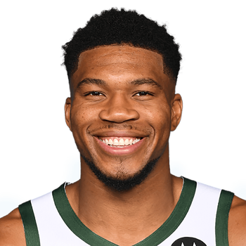
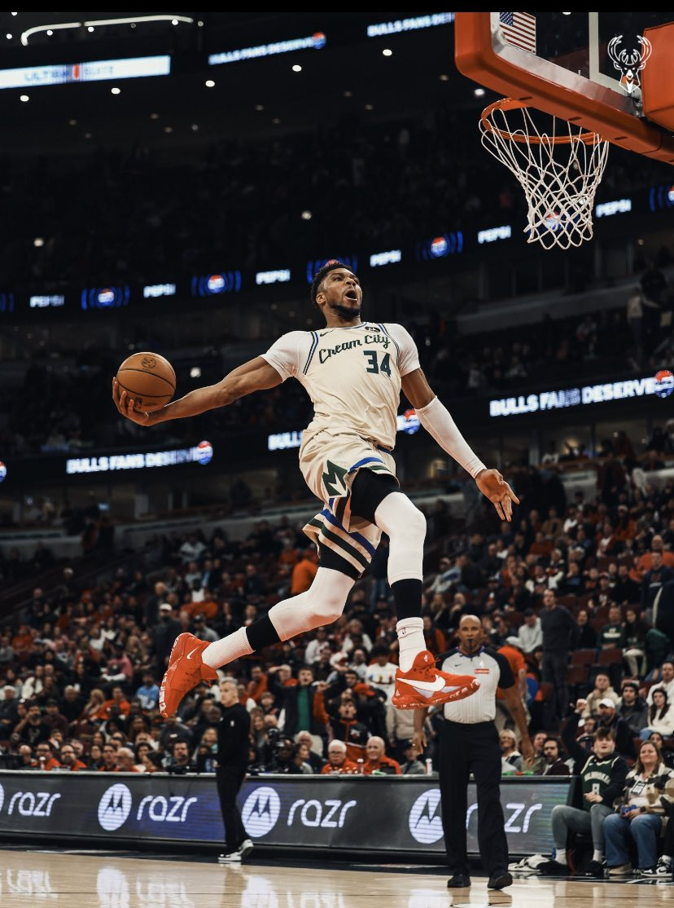
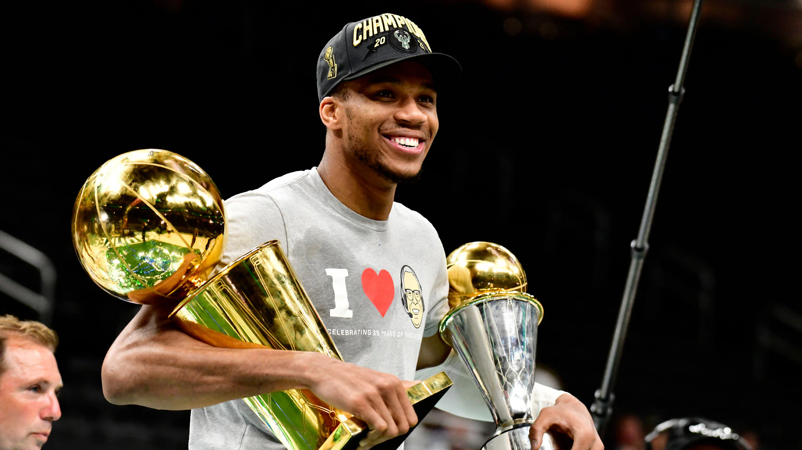

League MVPs
Featured Athlete
Giannis Antetokounmpo
Milwaukee Bucks forward, NBA Champion, Finals MVP, and two-time league MVP.
This page presents his early life, NBA rise, achievements, playing style, and a quick statistics snapshot in a more modern and interactive format.

NBA Championship
Finals MVP
Draft Year

Introduction
From prospect to superstar
Giannis Antetokounmpo is a professional basketball player for the Milwaukee Bucks in the NBA. Known for his size, athleticism, and versatility, he has become one of the most dominant players of his generation.
Over the years, he has won multiple MVP awards and helped lead Milwaukee to an NBA championship. His rise from an under-the-radar international prospect to one of the best players in the world is a major part of what makes his story so compelling.

Early Life
A difficult beginning that shaped him
Giannis was born in Athens, Greece, to Nigerian parents. Growing up, his family faced financial difficulties, and he often helped support them by selling items on the streets.
Those early experiences helped build the discipline, humility, and work ethic that still define him today. Basketball became more than a sport. It became a real path toward opportunity and stability.
NBA Career
Growth, awards, and a title run
Giannis was selected by the Milwaukee Bucks in the 2013 NBA Draft. During his early seasons, he gradually developed both his skills and his physical presence. His growth became impossible to ignore.
In the 2016–17 season, he won the Most Improved Player award. He later earned back-to-back MVP awards, was named Defensive Player of the Year, and led Milwaukee to an NBA championship in the 2020–21 season, where he was also named Finals MVP.

Playing Style & Impact
More than numbers
Giannis is often described as a two-way player because he makes a major impact on both offense and defense. He can attack the rim, defend multiple positions, and change the flow of a game in different ways.
Beyond statistics, he is respected for his leadership, effort, and consistency. His journey has also made him a role model for many young athletes, especially those from international backgrounds.
Career Statistics Snapshot
Selected regular season averages
| Season | Team | PTS / REB / AST | Notable Note |
|---|---|---|---|
| 2013 – 14 | Milwaukee Bucks | 7 / 4 / 2 | Rookie season |
| 2016 – 17 | Milwaukee Bucks | 23 / 9 / 5 | Most Improved Player |
| 2018 – 19 | Milwaukee Bucks | 28 / 13 / 6 | NBA MVP |
| 2019 – 20 | Milwaukee Bucks | 30 / 14 / 6 | MVP + Defensive Player of the Year |
| 2020 – 21 | Milwaukee Bucks | 29 / 11 / 6 | NBA Champion + Finals MVP |
| 2023 – 24 | Milwaukee Bucks | 30 / 11 / 6 | All-NBA Selection |
Contact
Send a message
This form is included as part of the project layout and interaction design.
References
Sources used
- NBA.com player profile
- Basketball-Reference season averages and career stats
- FOX Sports headshot image
- Daily Mail image used for early-life section
- X/Twitter image used for in-game photo
- NBA.com championship image